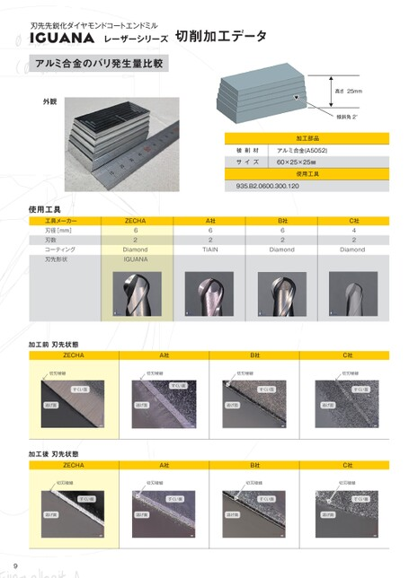

刃先先鋭化ダイヤモンドコートエンドミルレーザーシリーズIGUANA切削加工データアルミ合金のバリ発生量比較外観高さ25mm傾斜角2°加工部品被削材サイズアルミ合金(A5052)60×25×25㎜使用工具935.B2.0600.300.120使用工具工具メーカー刃径[mm]刃数コーティング刃先形状ZECHA62DiamondIGUANAA社62TiAINB社62C社42DiamondDiamond加工前刃先状態ZECHAA社B社切刃稜線切刃稜線切刃稜線C社切刃稜線すくい面すくい面すくい面すくい面逃げ面逃げ面逃げ面逃げ面加工後刃先状態ZECHAA社切刃稜線切刃稜線B社切刃稜線C社切刃稜線すくい面すくい面すくい面すくい面逃げ面逃げ面逃げ面逃げ面9
